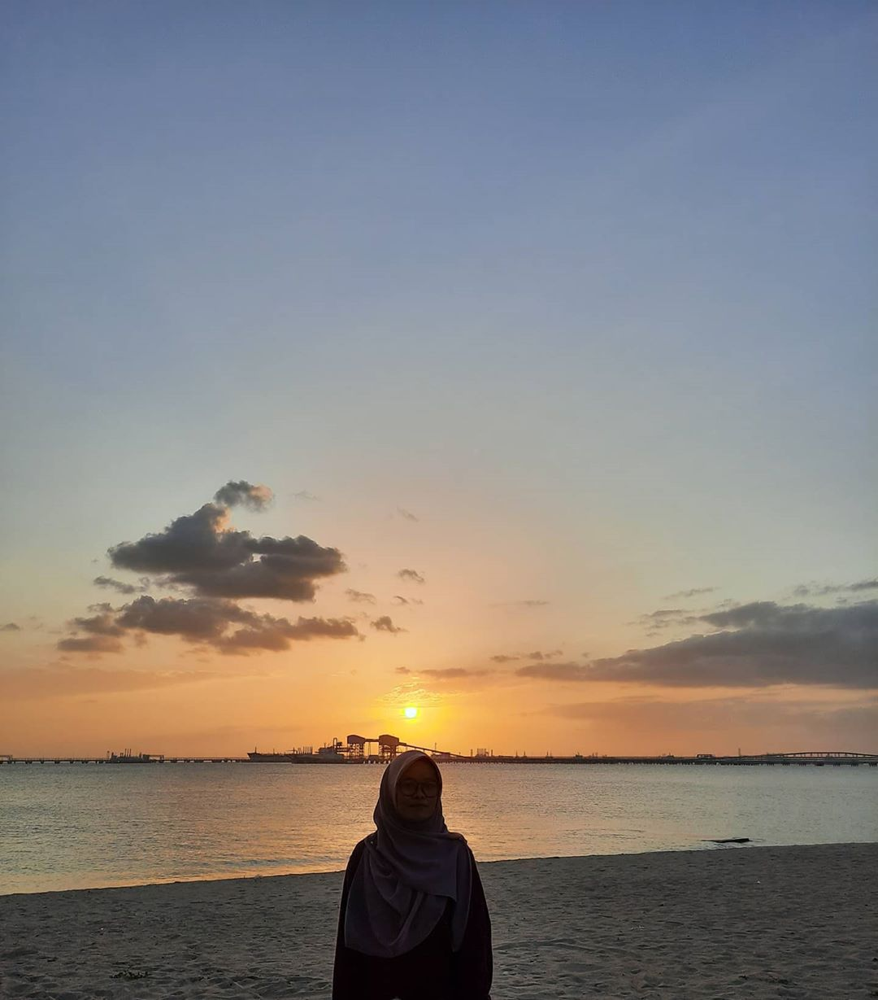
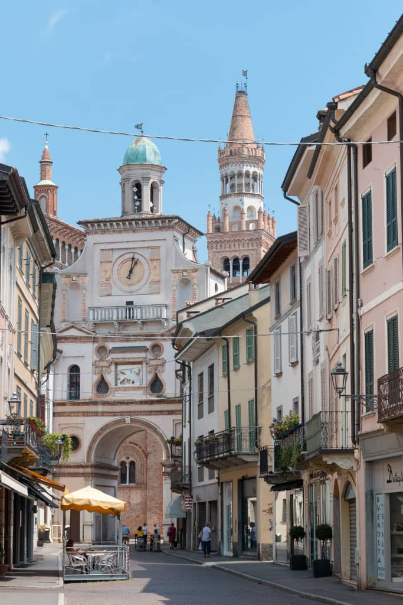
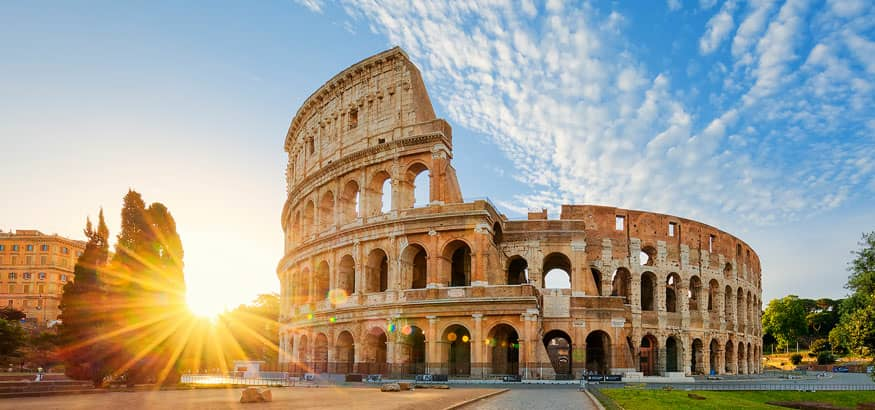
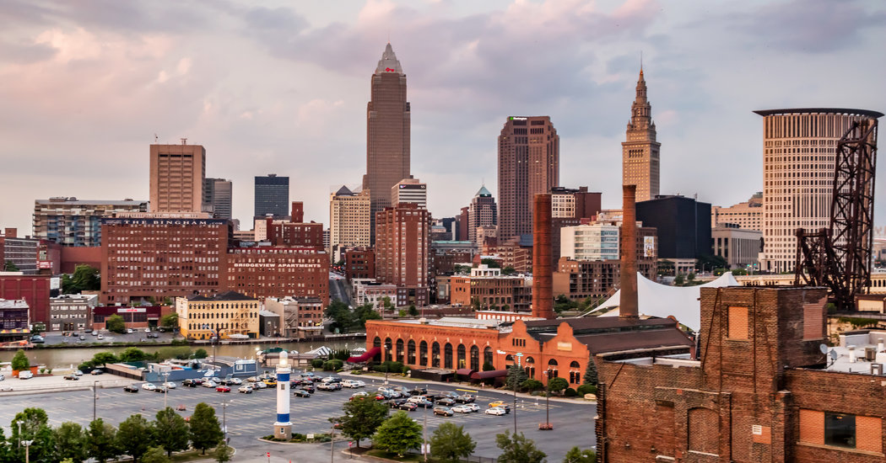

TO MY WEBSITE.
I'M NUR KASIH AZAHAR. A DIPLOMA STUDENT OF INFORMATION MANAGEMENT AT UiTM CAMPUS REMBAU, NEGERI SEMBILAN .
QUICK INFORMATION
HI HUMAN! okay this part is only for my quick information. if you want to know more, click button "about me".
As you guys can see my website are full of black color it is because I love black so much and the combination color of white and yellow, to me is simple yet bold. I love to take a picture of random things that I can see a story about it. For example, the pictures I have take skies, clouds, trees, and some random building. Next, I like to spend my time alone while listening to my playlist whenever I go I will always bring my earphone along even when I'm in the house it feels like I can escape from the reality and avoid people, even that I knew them I want to avoid make an interaction or communicate with them, I love being with myself but that is not mean I do not like to spend my time with people I know, I do but give me some time.
My Photos: Travel list
!! THIS PICTURE WAS ORIGINALLY FROM GOOGLE AND PINTEREST. CREDIT TO THE PHOTOGRAPHERS !!
This is my travel country list that i want to go if i have a time, money and more.I choose to go to these places because I think i am influence by movie that i watched. It is a nice place for travel or sightseeing after we watch our certain favourite movies. It is like we know how actors feels and what when they stay at that place and do their work and how much they love those places. Other than that, on rural area, it is like how people nowadays not using technologies such as the telephone and the Internet like they just use what that they have in their place. I like to go to people places is because I want to challenge myself. I want to push myself in things I love to do to get me to get out from my comfort zone
MECCA, SAUDI ARABIA
CREMA, ITALY
ROME, ITALY
TAJ MAHAL, INDIA
CLEVELAND, UNITED STATES

THAILAND